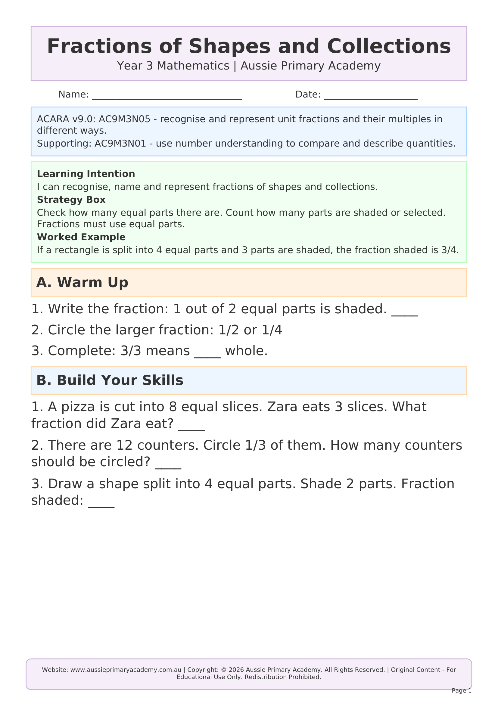

Year 3 · Maths · Fractions · Free Printable
Fractions of Shapes and Collections
Identify, represent and compare unit and non-unit fractions of a whole and a collection.

Learning Intention
Students will model and represent fractions of shapes and collections.
Australian Curriculum
AC9M3N02
Recognise and represent unit fractions including 1/2, 1/4, 1/3, 1/5 and their multiples in different ways; recognise fractions of shapes and collections.
Teacher Notes
Use fraction circles and counters. Start with unit fractions.
Skills Practised
- Fractions of shapes
- Fractions of collections
- Unit fractions
- Comparing fractions